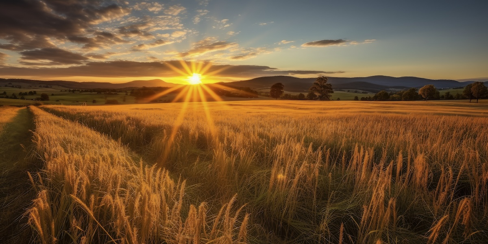

Fotoğrafçılıkta Altın Saat Nedir? Işığın Büyüsüyle En İyi Fotoğrafları Yakalamak
Fotoğrafçılıkta ışığın gücü tartışılmaz. İyi bir kompozisyon, doğru ekipman ve yetenekler kadar, ışığın fotoğraf üzerindeki etkisi de sanatsal bir sonucun anahtarıdır. İşte bu yüzden “altın saat” fotoğrafçılar için büyük bir öneme sahiptir. Peki, altın saat nedir ve neden bu kadar önemli?
Altın Saat Nedir?
Altın saat, güneşin doğuşundan hemen sonraki ve batışından hemen önceki zaman dilimini tanımlamak için kullanılır. Bu zaman diliminde güneş, gökyüzünde alçak bir pozisyondadır ve ışığın açısı, fotoğraflarda sihirli bir etki yaratır. Altın saat sırasında güneş ışığı daha yumuşak, sıcak tonlu ve gölgeler daha uzundur. Bu durum, sahnedeki detayları vurgular ve fotoğraflara duygusal bir derinlik kazandırır.

Altın Saatin Özellikleri
- Yumuşak Işık: Güneşin alçak açısı, ışığın daha dağınık ve yumuşak olmasına neden olur. Bu, sert gölgelerin ve aşırı kontrastın önüne geçer. Portre çekimlerinde yüz hatlarının daha yumuşak görünmesini sağlar.
- Sıcak Tonlar: Altın saat, adını bu özel zaman diliminde ortaya çıkan sıcak tonlardan alır. Kırmızı, turuncu ve sarı renkler daha baskın hale gelir, bu da çekilen fotoğraflara dramatik ve romantik bir hava katar.
- Uzun Gölgeler: Güneşin alçakta olması, uzun ve yumuşak gölgeler yaratır. Bu gölgeler, fotoğraflara derinlik katar ve sahnenin üç boyutlu bir hissiyat uyandırmasını sağlar.
- Göz Alıcı Gökyüzü: Güneş doğarken veya batarken, gökyüzü altın, pembe ve mavi tonlarla aydınlanır. Bu, manzara fotoğraflarına ek bir estetik katar ve atmosferik bir etki yaratır.
Altın Saati Kullanmanın İpuçları
- Zamanı İyi Planlayın: Altın saat, her gün yalnızca kısa bir süre içinde gerçekleşir. Bu yüzden çekimlerinizi planlamak çok önemlidir. Gün doğumu ve batım saatlerini takip eden uygulamalar kullanarak çekime zamanında başlayabilirsiniz.
- Hızlı Hareket Edin: Bu büyülü zaman dilimi kısa sürdüğü için hızlı olmak önemlidir. Çekimlerinizi önceden planlayın ve ekipmanınızı hazırlayın. Bu sayede altın saat boyunca en verimli şekilde çalışabilirsiniz.
- Düşük ISO Kullanın: Altın saatte ışık daha yumuşak ve yeterince aydınlık olduğundan, düşük ISO kullanarak daha az grenli ve daha net fotoğraflar elde edebilirsiniz.
- Gölgelerle Oynayın: Altın saatteki uzun gölgeler, fotoğraflarınıza derinlik ve gizem katar. Gölgeleri kompozisyonun bir parçası haline getirerek sahnede dramatik bir etki yaratabilirsiniz.
- Arka Aydınlatmayı Deneyin: Güneşin düşük açısı, arkadan aydınlatmalı fotoğraflar için mükemmel bir fırsat sunar. Arka ışık kullanarak objelerin çevresinde ışık hüzmeleri (rim light) oluşturabilir ve sahneye büyüleyici bir hava katabilirsiniz.
Altın Saatte Hangi Tür Fotoğraflar Çekilebilir?
- Manzara Fotoğrafları: Altın saat, doğa manzaraları için mükemmel bir zamandır. Dağlar, göller ve şehir manzaraları, altın ışıkta çekildiğinde inanılmaz güzellikte kareler ortaya çıkar.
- Portre Fotoğrafları: Yumuşak ve sıcak ışık, portre çekimlerinde cilt tonlarını güzel bir şekilde ortaya çıkarır. Aynı zamanda yüz hatlarının doğal ve pürüzsüz görünmesini sağlar.
- Mimari Fotoğraflar: Binalar ve yapılar, altın saatin uzun gölgeleri ve dramatik ışık oyunlarıyla farklı bir perspektif kazanır. Yansımalar ve ışığın dokuları ön plana çıkarması, mimari çekimlere derinlik katar.
- Sokak Fotoğrafçılığı: Şehir sokaklarında altın saat sırasında çekilen kareler, şehrin ritmini ve ruhunu yansıtan güçlü görüntüler sunabilir. Işığın ve gölgelerin hareketi, sıradan sahneleri büyüleyici hale getirebilir.
Altın saat, fotoğrafçılar için doğanın sunduğu en büyüleyici ışık fırsatlarından biridir. Güneşin doğuşu ve batışı sırasında yakalanan bu kısa ama büyülü anlar, her tür fotoğraf için dramatik ve etkileyici sonuçlar doğurur. İster manzara çekimleri yapın, ister portre veya sokak fotoğrafçılığıyla ilgilenin, altın saat boyunca ışığın dansını kullanarak unutulmaz kareler yakalayabilirsiniz.
Siz de bu özel zaman diliminde fotoğraf çekmeyi deneyin ve ışığın sanata nasıl dönüştüğüne tanıklık edin!